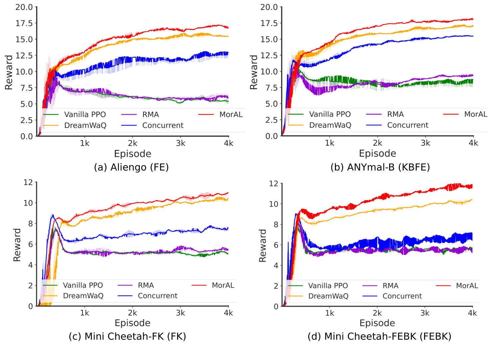

MorAL: Learning Morphologically Adaptive Locomotion Controller for Quadrupedal Robots on Challenging Terrains
A Learning-based Morphologically Adaptive Locomotion Controller for legged robots
Abstract
Due to the rapid development of the quadruped robot industry in the past decade, various commercial quadruped robots have emerged with distinct physical attributes. Different from the previous work in which the designed controller is robot-specific, this article proposes a learning-based control framework -- MorAL, which is adaptive to different morphologies of quadruped robots and challenging terrains. Our framework concurrently trains the control policy and an adaptive module, which considers the temporal robot states. This module empowers the control policy to implicitly online identify different robot platforms' properties and estimate body velocity. Extensive experiments in the real world and simulation demonstrate that our controller enables robots with significantly different morphology to overcome various indoor and outdoor harsh terrains.Comparison
The comparative evaluation is performed among the following locomotion controllers that only use proprioception, including Vanilla PPO, RMA, Concurrent and DreamWaQ. The following figure illustrates the learning performance of five different controllers in terms of the average rewards. It indicates that MorAL is the most efficient controller in this multi-morphology task.
Citation
Please cite the following publication when using this benchmark in an academic context:-
RA-LMorAL: Learning Morphologically Adaptive Locomotion Controller for Quadrupedal Robots on Challenging TerrainsIEEE Robotics and Automation Letters 2024